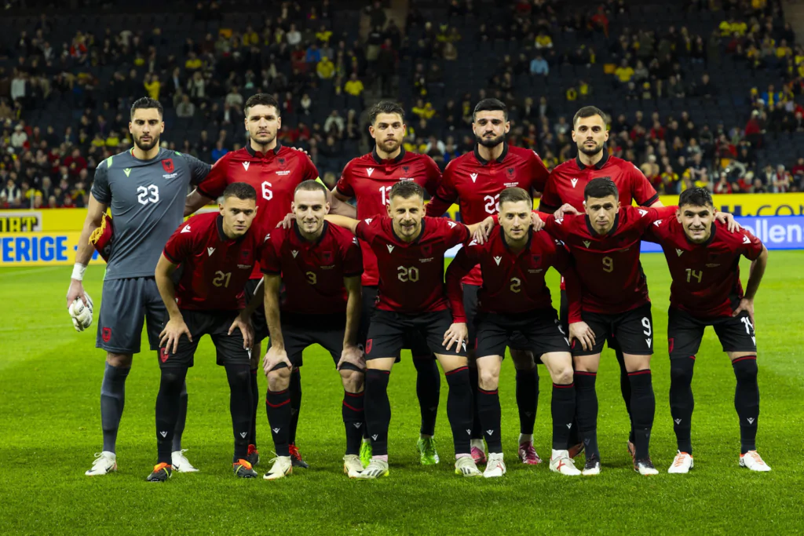

Seleção da Albania na UEFA Eurocopa
A seleção da Albânia, conhecida como Águias Vermelhas, vem a Eurocopa 2024 para tentar sua melhor campanha na competição,com a surpreendente classificação no comando de Silvinho, ex-técnico do Sport Club Corinthians Paulista.
